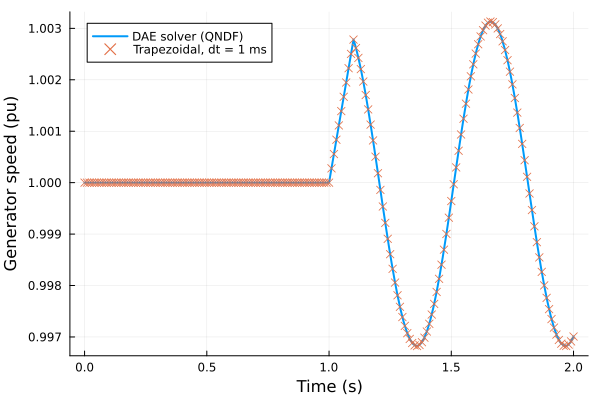

Y-Bus TDS Formulation
Time-domain simulation with an explicit Y-bus network model and Norton machine sources.
Overview
PowerfulYbus provides an alternative TDS formulation that:
- Models the network by the sparse Y-bus with Norton machine sources
- Takes every bus voltage a model uses (machine terminals, exciter inputs) from one source: the network's bus voltages
- Offers two solvers: an OrdinaryDiffEq.jl DAE solver (adaptive, implicit) and a fixed-step trapezoidal solver with a partitioned network solution
- In the DAE solver, keeps the network equations in the DAE (simultaneous, sparse Jacobian, the default) or eliminates them by a network solve in every evaluation (eliminated, dense Jacobian, a comparison baseline)
Network Model
The network is modeled as in phasor TDS:
- Machines (GENCLS, GENROU) are Norton sources: admittance
1/(ra + jX)in Y and currentE/(ra + jX)from their internal voltage. - Loads keep their ZIP model with the constant-power breakpoint (
SystemModel(...; constant_power_vmin)): the constant-impedance part is in Y; the constant-power and constant-current parts are current injections. - Current sources inject the power they deliver (
Pe + j Qe) at the bus voltage: the current(Pe - j Qe) / valong it. REGCA1 is refused at setup (see the limitations below). - Static generators (PV or Slack units without a dynamic model) hold their bus as in the power flow: a PV unit keeps its active power and voltage magnitude, a Slack unit its voltage.
With only constant-impedance loads and no PV constraints the network equations are linear and are solved directly by a sparse complex LU factorization kept per topology. Otherwise they are solved by a sparse Newton iteration on the bus voltages (exact Jacobian, factorization reused while it converges, backtracking line search). The Y-bus is never reduced, so the same formulation serves small and large systems.
Basic Workflow
using Powerful
using PowerfulCases
using PowerfulYbus
# Step 1: Solve power flow (two-bus case: a large machine and a generator)
case = load("two_bus_branch")
sys = SystemModel(parse_network(case.raw))
pf_sol = solve(ACPowerFlowProblem(sys), Newton())
# Step 2: Create the TDS problem
dyr_data = parse_dynamics(case.dyr, sys)
init = setup_tds(pf_sol, dyr_data)
tds_prob = TDSProblem(init; tspan = (0.0, 2.0))
# Step 3: Wrap it in the Y-bus formulation, with the events
events = [BusFault(1.0, 1.1, 1, "F1"; xf = 1e-4)]
ybus_prob = YBusTDSProblem(tds_prob; events = events)
# Step 4: Solve (DAE solver, network equations in the DAE)
sol = solve(ybus_prob)TDSSolution{Float64}
Solver: TDS (DiffEq)
Timesteps: 53
Time span: (0.0, 2.0)
States: 4 differential, 8 algebraic
Return code: Success
Interpolation: available
Events are given to YBusTDSProblem, which pre-computes the Y matrix of every topology they create.
Solvers
DAE Solver (Default)
solve integrates the mass-matrix DAE M · du/dt = F(u, t) with an OrdinaryDiffEq.jl algorithm. The network keyword chooses how the network equations enter the DAE:
sol = solve(ybus_prob; abstol = 1e-8, reltol = 1e-6) # SimultaneousNetwork()
sol = solve(ybus_prob, FBDF(linsolve = KLUFactorization()); network = SimultaneousNetwork())
sol = solve(ybus_prob; network = EliminatedNetwork(), abstol = 1e-8, reltol = 1e-6)SimultaneousNetwork() (default, recommended) | EliminatedNetwork() (comparison baseline) | |
|---|---|---|
| Bus voltages | DAE unknowns | Pinned to the network solution: v - |V|, theta - ∠V |
| Network equations | DAE residuals: KCL Y V - I_E - I_inj(V) (static generator constraints at their buses) | Solved inside every evaluation |
| Jacobian | Sparse (machine blocks and the pattern of Y), ForwardDiff with coloring | Dense in the machine states, ForwardDiff through the network solve (implicit function theorem) |
| Default algorithm | QNDF(linsolve = KLUFactorization()) | QNDF() |
| Current sources | Supported | Not supported (error) |
Both treatments solve the same DAE. SimultaneousNetwork keeps the Jacobian sparse and is the one to use; EliminatedNetwork has a dense Jacobian and serves as a reference for comparing the two treatments.
At the initial time and after every topology change the algebraic variables are made consistent with the machine states under the active topology, so no DAE reinitialization algorithm is needed (initializealg defaults to NoInit()). maxiters and network_abstol (defaults 50 and 1e-8 pu) limit the network solves; a network solve that does not converge throws an error.
Trapezoidal Solver
A fixed-step solver with a partitioned solution:
sol = solve_trapezoidal(ybus_prob; dt = 0.01)Features:
- Trapezoidal integration of the machine and controller states with a fixed time step (adjusted per interval so that event times are hit exactly)
- Partitioned solution: in every step the network solve gives the algebraic variables for the current machine states (no Newton iteration on the full DAE)
maxiters and abstol (defaults 50 and 1e-8 pu) limit the Newton iteration of each network solve. A step whose network solve or algebraic solve does not converge stops the simulation with a warning (the time, the iterations, the residual and its worst rows); the returned solution holds the trajectory up to the last completed step and has retcode = :ConvergenceFailure (SciML's ReturnCode.ConvergenceFailure, as the DiffEq integration returns when an event or a transition leaves the algebraic variables unsolved).
The trapezoidal solver assigns controller algebraic variables (e.g. P_m, E_fd) directly. Custom dynamic models must write their algebraic equations in the explicit form g = f - y. See Developer: Implementing Models (explicit algebraic equation form).
Solver Comparison
| Aspect | DAE solver | Trapezoidal |
|---|---|---|
| Step size | Adaptive | Fixed |
| Jacobian | ForwardDiff (sparse or dense, by network) | Network Jacobian only |
| Network equations | In the DAE, or solved per evaluation (network) | Sparse network solve per step |
| Error control | abstol, reltol | Step size dt |
Fault Events
BusFault Event
A bus fault; the fault model is added automatically:
events = [BusFault(1.0, 1.1, 5, "F1"; xf = 1e-4)]
ybus_prob = YBusTDSProblem(tds_prob; events = events)BusFault parameters:
time_on: Fault application time (s)time_off: Fault clearing time (s)bus: Bus where the fault occursid: Fault identifier (default:"F1")xf: Fault reactance (pu, default: 0.003)rf: Fault resistance (pu, default: 0.0)
BranchTrip and BranchClose switch lines as in phasor TDS.
A fault at one end of a line that is cleared by tripping the line is a BusFault and a BranchTrip at the clearing time, as in phasor TDS:
# Fault at bus 1 on line 1-2 circuit "1" at t = 1.0 s, cleared at t = 1.1 s by
# tripping the line
events = [BusFault(1.0, 1.1, 1; xf = 1e-4), BranchTrip(1.1, 1, 2, "1")]
ybus_prob = YBusTDSProblem(tds_prob; events = events)Topology Switching
Events create topologies such as:
- Pre-fault: normal system topology
- Fault-on: fault admittance added at the fault bus
- Post-fault: fault cleared (
BusFault) or line tripped (BranchTrip)
All Y matrices are computed when the problem is constructed, so switching topology during the simulation does not rebuild them.
Mass Matrix Formulation
The DAE system uses a mass matrix:
M · dx/dt = f(x, y, t)
0 = g(x, y, t)Where:
Mis diagonal with model-specific coefficients (e.g.2Hfor rotor speeds)- Differential states have
M[i] > 0 - Algebraic equations have
M[i] = 0
The mass matrix is computed once, when YBusTDSProblem is constructed.
Accessing Results
Both solvers return a TDSSolution (sol.retcode is a Symbol such as :Success), so get_series works the same as for phasor TDS:
t, omega_2 = get_series(sol, :GENCLS, :omega, (2, "1")) # generator speed
t, v_1 = get_series(sol, :Bus, :v, 1) # faulted bus voltage
sol.retcode, length(t), extrema(v_1)(:Success, 53, (0.0013896904952750823, 1.0041605396425235))sol.t holds the time points. The raw states are sol.u: a vector of state vectors [x; y] for the DAE solver, and a matrix with one column per time step for the trapezoidal solver.
Complete Example
The DAE solver and the trapezoidal solver on the same fault:
sol_dae = solve(ybus_prob; abstol = 1e-8, reltol = 1e-6)
sol_trap = solve_trapezoidal(ybus_prob; dt = 0.001)
t_dae, w_dae = get_series(sol_dae, :GENCLS, :omega, (2, "1"))
t_trap, w_trap = get_series(sol_trap, :GENCLS, :omega, (2, "1"))
using Plots
plot(t_dae, w_dae; label = "DAE solver (QNDF)", lw = 2,
xlabel = "Time (s)", ylabel = "Generator speed (pu)")
plot!(t_trap[1:10:end], w_trap[1:10:end]; label = "Trapezoidal, dt = 1 ms",
seriestype = :scatter, marker = :x)
When to Use the Y-Bus Formulation
Advantages:
- Fixed-step partitioned solution for long transient stability runs
- Same load and generator models as phasor TDS
- Sparse network solve without network reduction
Limitations:
- Requires generators with an internal voltage (classical/detailed machine models) or current-source converter models
- The algebraic variables (the bus voltages and the models' algebraic variables) are solved by one Newton iteration on the models' algebraic rows and the network equations together (
AlgebraicNewton,solve_algebraic!, on the Newton engine of PowerfulCore shared with the reinitialization of the phasor simulation), with the sparse Jacobian of that system (sparse ForwardDiff with the model-structure pattern, KLU), kept from step to step until a topology, the data of a model or a mode of an automaton changes it, or an iteration contracts the residual too little. Steps are limited to 0.5 pu and keep the bus voltage magnitudes positive, so that the angles are continuous (not wrapped) and no voltage reaches the other solution of the polar equations. It converges quadratically wherever the Newton method does, with no condition on the coupling between the converters and the network. A row that does not read its own variable (REGCA1'sdqin the clamp of its high-voltage management,Volim - v) is solved too; a model whose rows do not determine their variables throws, naming the rows and modes. A solve that does not converge inmaxitersiterations (the time, the iterations, the residual and its worst rows) stops the simulation withretcode = :ConvergenceFailure - A network solve of the step's derivatives that cannot converge (for example voltage collapse with constant-power loads) stops the trapezoidal simulation with
retcode = :ConvergenceFailure
Further Reading
- Time-Domain Simulation: Standard TDS formulation
- Power Flow Analysis: Power flow initialization